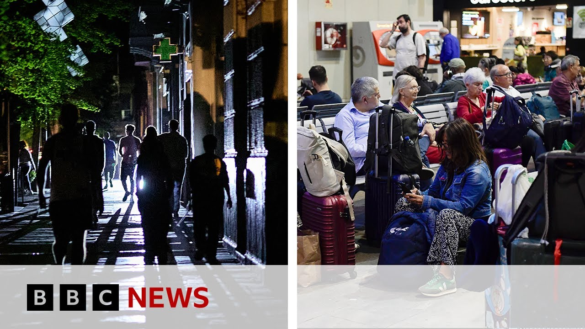

来B站一起耍【Global每日英语简报】
【西班牙和葡萄牙停电后电力恢复 | BBC新闻】
Summary: Electricity is gradually being restored in Spain and Portugal after a massive blackout disrupted millions, with transport and schools still affected as authorities work to fully resume power.
摘要： 西班牙和葡萄牙大范围停电后电力正逐步恢复，此次停电影响数百万人，交通和学校仍受影响，当局正努力全面恢复供电。

⏱️ Estimated Reading Time: 9 min
Now over to Europe.
现在转向欧洲。
Electricity is being restored across Spain and Portugal a day after a massive power cut.
西班牙和葡萄牙大范围停电一天后，电力正在恢复。
It caused disruption to millions of shops, homes, and businesses and paralyzed transport networks in both countries.
停电导致两国数百万商店、家庭和企业陷入混乱，交通网络瘫痪。
The operator of Spain's national grid says that power has now been restored to 90% of the country's mainland, but the effects of the blackout are likely to be felt for days.
西班牙国家电网运营商表示，该国大陆地区90%的电力已恢复，但停电的影响可能持续数日。
Well, our correspondents in Spain and Portugal gave us the latest from the ground.
我们在西班牙和葡萄牙的记者发回了最新现场报道。
Here's Geekco in Madrid.
这是马德里的Geekco。
Well, certainly in central Madrid, it feels as if things are pretty much uh back to normal.
在马德里市中心，感觉情况基本恢复正常。
Traffic is flowing again after those problems with traffic lights uh yesterday.
昨天交通信号灯出现问题后，交通已恢复畅通。
Um however, there are some exceptions.
不过仍有一些例外。
Uh schools are not uh open as normal today in many areas of the country.
该国许多地区的学校今天未正常开放。
And another big exception is rail travel.
另一个例外是铁路旅行。
There's still quite severe disruption in many areas of the country, particularly up in the region of Catalonia uh and some other areas.
该国许多地区仍存在严重中断，特别是加泰罗尼亚等地区。
and many rail passengers uh did spend a night out in in stations uh last night.
许多铁路乘客昨晚在车站过夜。
So, um things are still returning to normal.
因此，情况仍在恢复正常。
Um there's a feeling that we're not quite back to 100%, but the authorities are telling us that in the coming hours are hoping that we will be back up to 100% of uh uh energy uh supply and we'll be back to relatively speaking back to normal.
感觉尚未完全恢复100%，但当局表示未来几小时有望恢复全部电力供应，基本恢复正常。
Guy there in Madrid, Allison, you're in Lisbon.
马德里的Guy，里斯本的Allison。
We understand that as Guy was saying, schools not reopening fully across Spain, but the situation is slightly different in Portugal.
正如Guy所说，西班牙学校未全面复课，但葡萄牙情况略有不同。
What's the scenario there like?
那里的情况如何？
Well, right now I'm actually in the north of Portugal.
我现在在葡萄牙北部。
The lights came on a little bit earlier than in Lisbon last night.
昨晚这里的电力恢复比里斯本稍早。
Uh but now there are perhaps a couple of hundred,000 people only uh without power.
但目前可能仍有约20万人断电。
The government says that they do hope that that will all be resolved in the coming hours.
政府表示希望未来几小时内解决所有问题。
And as you can see behind me, traffic is certainly flowing.
如您所见，我身后的交通已恢复。
Uh things pretty much back to normal.
情况基本恢复正常。
We had some difficulty with the Lisbon Metro system, for example, this morning.
例如今早里斯本地铁系统仍有些困难。
It opened rather later than usual.
开放时间比平时晚。
Uh most schools should actually be open and functioning today.
大多数学校今天应正常开放运行。
Certainly the government said that it expected that.
政府确实如此预期。
Uh so the expectation is that things will be pretty much back to normal today throughout the day.
因此预计今天全天将基本恢复正常。
Okay.
好的。
And the overwhelming question, guy, is why?
Guy，最关键的问题是为什么？
What was behind this huge power outage?
这次大停电的原因是什么？
I know that Spain's increasing reliance on solar and wind was said to have exacerbated the power cuts.
据悉西班牙日益依赖太阳能和风能加剧了停电。
What kind of commentary has there been there in Spain?
西班牙对此有何评论？
Well, yes, I mean that's one of the things that people are are talking about at the moment and and I think you know understandably there's going to be a lot of focus on how Spain uh generates its electricity where it comes from.
是的，这是人们当前讨论的话题之一，可以理解大家会重点关注西班牙的电力来源。
Um, we do know that that Spain and Portugal were cut off from the main European uh grid yesterday, but we don't know what why this happened.
我们知道西班牙和葡萄牙昨日与欧洲主电网断开，但尚不清楚原因。
Um, inevitably, I think there's a lot of talk about cyber attacks possibly, but the government's been quite adamant that we shouldn't jump to conclusions.
不可避免地有人猜测可能是网络攻击，但政府坚称不应仓促下结论。
It's saying that it's not ruling out any possibilities.
政府表示不排除任何可能性。
There was one senior politician in the south of the country, Juan Moreno, yesterday who seemed to be pointing the finger very firmly at a cyber attack, but the government um has insisted that we we don't know that uh at the moment.
该国南部高级政客Juan Moreno昨日似乎明确指责网络攻击，但政府坚称目前尚不清楚。
That's uh just one hypothesis.
这只是一种假设。
Um and it's saying we have to be patient and wait for more information before we know exactly what happened.
政府表示需耐心等待更多信息才能确知原因。
Yeah.
是的。
And Allison, Portugal's leader, Prime Minister Luis Montenegro was very quick yesterday to say that this wasn't a cyber attack.
Allison，葡萄牙总理Luis Montenegro昨日迅速否认这是网络攻击。
Well, he said certainly there's nothing that could point to that and obviously there there were people who came out and said this looks as though it's a cyber attack, but certainly the government said there's no evidence pointing to that at all.
他表示毫无证据表明是网络攻击，尽管有人声称看似如此，但政府强调完全没有证据。
But from the point of view of Portugal, obviously they are looking to Spain now to see um if they can work out what the causes are.
但从葡萄牙角度看，他们正期待西班牙查明原因。
Um, when Portugal came back up again, it was very much a a local affair with two major power stations getting the system back and running with no help from Spain.
葡萄牙恢复供电主要依靠本地两座大型发电站自主重启系统，未依赖西班牙。
So, they're back to the old days um when the two systems were running separately because normally they are very much interconnected and that's why Portugal was affected uh with this uh power outage.
因此两国电网暂时回到独立运行状态，通常它们高度互联，这也是葡萄牙受此次停电影响的原因。
And guy, you've talked about the disruption on across the nail works across the Madrid metro, but tennis also being impacted.
Guy，你提到马德里地铁中断，网球也受影响。
The uh Madrid Open, it was the game games were cancelled yesterday.
马德里公开赛昨日比赛取消。
What's the situation like today, do we know?
今天情况如何？
Um well, that's right.
嗯，是的。
It was and this is a major sporting event uh not just for Madrid, but for for Spain.
这是马德里乃至西班牙的重大体育赛事。
Um the latest I'm told is is that I believe that play is is expected to resume uh today.
最新消息称比赛预计今天恢复。
But we're awaiting further details uh about that.
但我们仍在等待进一步细节。
But you know I think this it shows how far this outage reached not just into things like transport and traffic and so on but into many other areas of life um and how it even affected sport yesterday.
这显示停电影响深远，不仅涉及交通等领域，还波及生活的许多方面，甚至影响昨日体育赛事。
Yeah indeed.
确实如此。
And Allison, just a final word from you then.
Allison，最后请总结一下。
Just as slowly those power supplies are re re-energized and people are getting back to normal.
随着电力逐步恢复，人们生活正回归正轨。
I wonder was there a sense of exasperation across the public in Portugal or was it down to business as usual albeit without essential mobile phones?
葡萄牙公众是否感到愤怒，还是在没有手机的情况下如常生活？
Well, there was some degree of panic yesterday.
昨日确实有些恐慌。
A lot of uh people rushing to what shops were open to buy essentials.
许多人冲向营业商店抢购必需品。
a lot of people buying water, toilet paper.
许多人购买水、卫生纸。
This is something we saw uh in lockdown during the pandemic.
这让我们想起疫情期间的封锁场景。
Um uh perhaps a little bit of concern that the government didn't come out a little little earlier and make clear uh that it was on the case as it were.
或许有人担心政府未能更早明确表态正在处理问题。
But in fact, for much of the day yesterday, it wasn't just the internet.
但事实上昨日大部分时间不仅断网。
In fact, it wasn't possible to even make mobile phone calls.
甚至无法拨打手机。
It was only people who had car radios or or battery powered radios that actually could work out what was going on.
只有拥有车载收音机或电池收音机的人才能了解情况。
Our thanks to Allison Roberts there in Lisbon Hedgeco in Madrid.
感谢里斯本的Allison Roberts和马德里的Hedgeco。